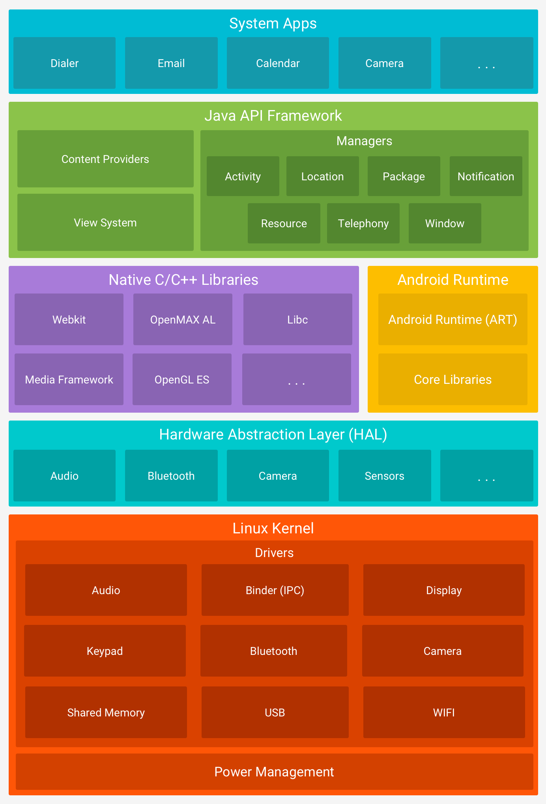
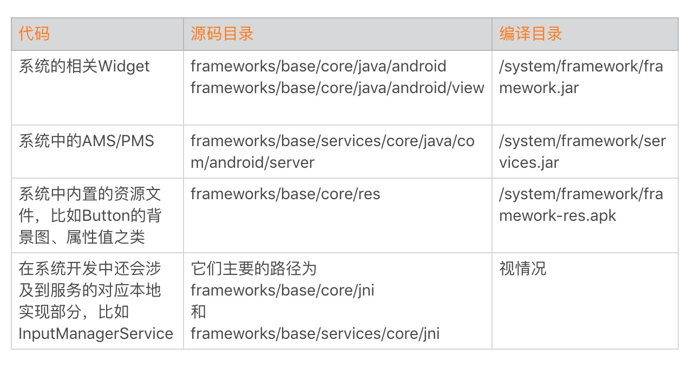
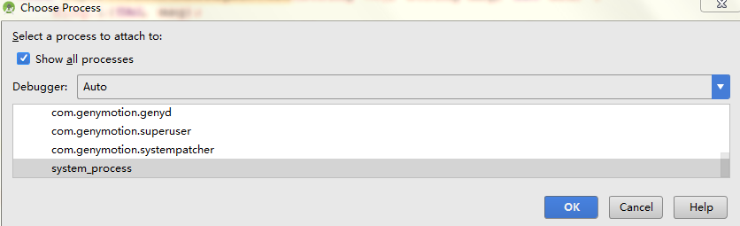
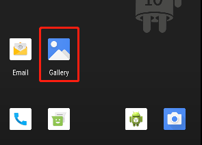
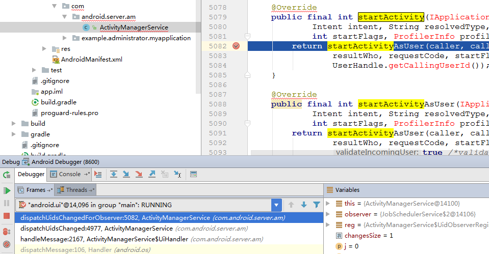
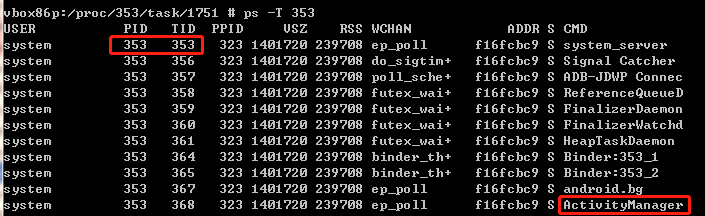
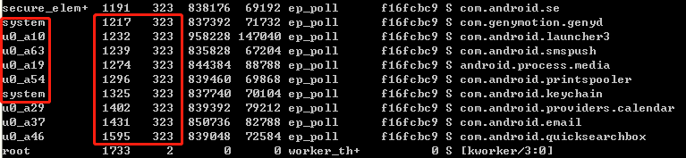
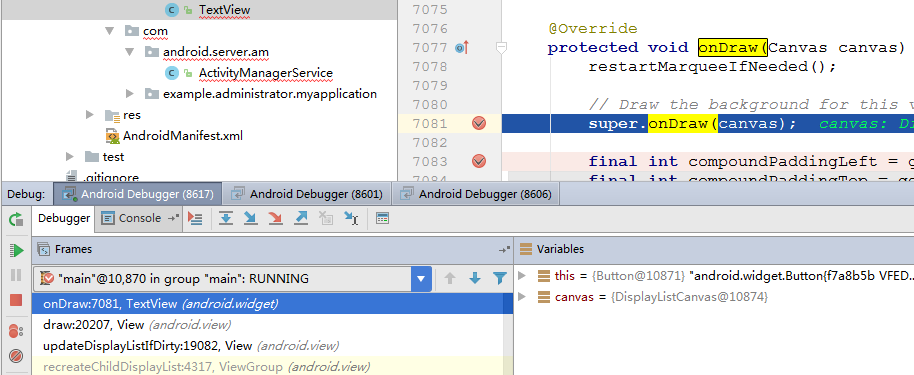

大家好，我是陆晓明，现在在一家互联网手机公司担任 Android 系统开发工程师。很高兴可以在极客时间 Android 开发高手课专栏里，分享一些我在手机行业 9 年的经验以及学习 Android 的方法。
今天我要跟你分享的是 Framework 的学习和调试的方法。
首先，Android 是一种基于 Linux 的开放源代码软件栈，为广泛的设备和机型而创建。下图是 Android 平台的主要组件。

从图中你可以看到主要有以下几部分组成：
- Linux 内核
- Android Runtime
- 原生 C/C++ 库
- Java API 框架（后面我称之为 Framework 框架层）
- 系统应用
我们在各个应用市场看到的，大多是第三方应用，也就是安装在 data 区域的应用，它们可以卸载，并且权限也受到一些限制，比如不能直接设置时间日期，需要调用到系统应用设置里面再进行操作。
而我们在应用开发过程中使用的四大组件，便是在 Framework 框架层进行实现，应用通过约定俗成的规则，在 AndroidMainfest.xml 中进行配置，然后继承对应的基类进行复写。系统在启动过程中解析 AndroidMainfest.xml，将应用的信息存储下来，随后根据用户的操作，或者系统的广播触发，启动对应的应用。
那么，我们先来看看 Framework 框架层都有哪些东西。
Framework 框架层是应用开发过程中，调用的系统方法的内部实现，比如我们使用的 TextView、Button 控件，都是在这里实现的。再举几个例子，我们调用 ActivityManager 的 getRunningAppProcesses 方法查看当前运行的进程列表，还有我们使用 NotificationManager 的 notify 发送一个系统通知。
让我们来看看 Framework 相关的代码路径。

如何快速地学习、梳理 Framework 知识体系呢？常见的学习方法有下面几种：
- 阅读书籍（方便梳理知识体系，但对于解决问题只能提供方向）。
- 直接阅读源码（效率低，挑战难度大）。
- 打 Log 和打堆栈 （效率有所提升，但需要反复编译，添加 Log 和堆栈代码）。
- 直接联调，实时便捷（需要调试版本）。
首先可以通过购买相关的书籍进行学习，其中主要的知识体系有 Linux 操作系统，比如进程、线程、进程间通信、虚拟内存，建立起自己的软件架构。在此基础上学习 Android 的启动过程、服务进程 SystemServer 的创建、各个服务线程（AMS/PMS 等）的创建过程，以及 Launcher 的启动过程。熟悉了这些之后，你还要了解 ART 虚拟机的主要工作原理，以及 init 和 Zygote 的主要工作原理。之后随着在工作和实践过程中你会发现，Framework 主要是围绕应用启动、显示、广播消息、按键传递、添加服务等开展，这些代码的实现主要使用的是 Java 和 C++ 这两种语言。
通过书籍或者网络资料学习一段时间后，你会发现很多问题都没有现成的解决方案，而此时就需要我们深入源码中进行挖掘和学习。但是除了阅读官方文档外，别忘了调试 Framework 也是一把利刃，可以让你游刃有余快速定位和分析源码。
下面我们来看看调试 Framework 的 Java 部分，关于 C++ 的部分，需要使用 GDB 进行调试，你可以在课下实践一下，调试的过程可以参考《深入 Android 源码系列（一）》。
我们这里使用 Android Studio 进行调试，在调试前我们要先掌握一些知识。Java 代码的调试，主要依据两个因素，一个是你要调试的进程；一个是调试的类对应的包名路径，同时还要保证你所运行的手机环境和你要调试的代码是匹配的。只要这两个信息匹配，编译不通过也是可以进行调试的。
我们调试的系统服务是在 SystemServer 进程中，可以使用下面的命令验证（我这里使用 Genymotion 上安装 Android 对应版本镜像的环境演示）。
ps -A |grep system_server 查看系统服务进程 pidcat /proc/pid/maps |grep services 通过 cat 查看此进程的内存映射，看看是否 services 映射到内存里面。这里我们看到信息：/system/framework/oat/x86/services.odex 。
odex 是 Android 系统对于 dex 的进一步优化，目的是为了提升执行效率。从这个信息便可以确定，我们的 services.jar 确实是跑到这里了，也就是我们的系统服务相关联的代码，可以通过调试 SystemServer 进程进行跟踪。
下来我们来建立调试环境。
-
打开 Genymotion，选择下载好 Android 9.0 的镜像文件，启动模拟器。
-
找到模拟器对应的 ActivityManagerService.java 代码。 我是从http://androidxref.com/下载 Android 9.0 对应的代码。
-
打开 Android Studio，File -> New -> New Project 然后直接 Next 直到完成就行。
-
新建一个包名，从 ActivityManagerService.java 文件中找到它，这里为
com.android.server.am，然后把 ActivityManagerService.java 放到里面即可。 -
在 ActivityManagerService.java 的 startActivity 方法上面设置断点，然后找到菜单的 Run -> Attach debugger to Android process 勾选 Show all process，选中 SystemServer 进程确定。

这时候我们点击 Genymotion 模拟器中桌面的一个图标，启动新的界面。

会发现这时候我们设定的断点已经生效。

你可以看到断下来的堆栈信息，以及一些变量值，然后我们可以一步步调试下去，跟踪启动的流程。
对于学习系统服务线程来讲，通过调试可以快速掌握流程，再结合阅读源码，便可以快速学习，掌握系统框架的整个逻辑，从而节省学习的时间成本。
以上我们验证了系统服务 AMS 服务代码的调试，其他服务调试方法也是一样，具体的线程信息，可以使用下面的命令查看。
ps -T 353 这里 353 是使用 ps -A |grep SystemServer 查出 SystemServer 的进程号
在上面图中，PID = TID 的只有第一行这一行，如果 PID = TID 的话，也就是这个线程是主线程。下面是我们平时使用 Logcat 查看输出的信息。
03-10 09:33:01.804 240 240 I hostapd : type=1400 audit(0.0:1123): avc: de03-10 09:33:37.320 353 1213 D WificondControl: Scan result ready event03-10 09:34:00.045 404 491 D hwcomposer: hw_composer sent 6 syncs in 60s这里我还框了一个 ActivityManager 的线程，这个是线程的名称，通过查看这行的 TID（368）就知道下面的 Log 就是这个线程输出的。
03-10 08:47:33.574 353 368 I ActivityManager: Force stopping com.android.providers学习完上面的知识，相信你应该学会了系统服务的调试。通过调试分析，我们便可以将系统服务框架进行庖丁解牛般的学习，面对大量庞杂的代码掌握起来也可以轻松一些。
我们回过头来，再次在终端中输入ps -A，看看下面这一段信息。

你可以看到这里的第一列，代表的是当前的用户，这里有 system root 和 u0_axx，不同的用户有不同的权限。我们当前关注的是第二列和第三列，第二列代表的是 PID，也就是进程 ID；第三列代表的是 PPID，也就是父进程 ID。
你发现我这里框住的都是同一个父进程，那么我们来找下这个 323 进程，看看它到底是谁。
root 323 1 1089040 127540 poll_schedule_timeout f16fcbc9 S zygote这个名字在学习 Android 系统的时候，总被反复提及，因为它是我们 Android 世界的孵化器，每一个上层应用的创建，都是通过 Zygote 调用 fork 创建的子进程，而子进程可以快速继承父进程已经加载的资源库，这里主要指的是应用所需的 JAR 包，比如 /system/framework/framework.jar，因为我们应用所需的基础控件都在这里，像 View、TextView、ImageView。
接下来我来讲解下一个调试，也就是对 TextView 的调试（其他 Button 调试方式一样）。如前面所说，这个代码被编译到 /system/framework/framework.jar，那么我们通过 ps 命令和 cat /proc/pid/maps 命令在 Zygote 中找到它，同时它能够被每一个由 Zygote 创建的子进程找到，比如我们当前要调试 Gallery 的主界面 TextView。
我们验证下，使用ps -A |grep gallery3d查到 Gallery 对应的进程 PID，使用 cat /proc/pid/maps |grep framework.jar 看到如下信息：
efcd5000-efcd6000 r--s 00000000 08:06 684 /system/framework/framework.jar这说明我们要调试的应用进程在内存映射中确实存在，那么我们就需要在 gallery3d 进程中下断点了。
下来我们建立调试环境：
-
打开 Genymotion，选择下载好 Android 9.0 的镜像文件，启动模拟器，然后在桌面上启动 Gallery 图库应用。
-
找到模拟器对应的 TextView.java 代码。
-
打开 Android Studio，File -> New -> New Project 然后直接 Next 直到完成就行。
-
新建一个包名，从 TextView.java 文件中找到它的包名，这里为 android.widget，然后把 TextView.java 放到里面即可。
-
在 TextView.java 的 onDraw 方法上面设置断点，然后找到菜单的 Run -> Attach debugger to Android process 勾选 Show all process，选中 com.android.gallery3d 进程（我们已知这个主界面有 TextView 控件）确定。
然后我们点击下这个界面左上角的菜单，随便选择一个点击，发现断点已生效，具体如下图所示。

然后我们可以使用界面上的调试按钮（或者快捷键）进行调试代码。
今天我讲解了如何调试 Framework 中的系统服务进程的 AMS 服务线程，其他 PMS、WMS 的调试方法跟 AMS 一样。并且我也讲解了如何调试一个应用里面的 TextView 控件，其他的比如 Button、ImageView 调试方法跟 TextView 也是一样的。
通过今天的学习，我希望能够给你一个学习系统框架最便捷的路径。在解决系统问题的时候，你可以方便的使用调试分析，从而快速定位、修复问题。
COMMUNITY NOTES
读者评论
我就是有个毛病，遇到难的，更底层的东西总想着绕过去，而不是迎头而上，所以很多时候不能很好的解决问题。惧怕看源码，调试，到现在不一样了，我也知道很多高手都是能轻松看源码和调试，所以我也试着改变自己了
楼上说的官方是在8.1，需要自己切换分支，下载9.0的就行了。 国内的可以先使用清华镜像下载，下载好了切换到9.0的代码上。有问题欢迎在官方安卓进阶开发微信群@ 我，随时等待大家的交流。
如果调试某个具体的流程，就将关联的文件放到对应的包名下即可。找对你要调试的进程，就可以在这些文件的具体方法下断点，进行调试跟踪。当发现没有调试上的时候，可以确定下是否源码不匹配？是否调试的进程不对（可以通过干掉你调试的进程，看看是否你调试的东西会挂掉，当然systemserver干掉手机就软重启啦。你想调试systemserver的启动过程，倒是可以这么干）在调试的过程中，使用源码阅读工具，将相关联的代码放入环境，在可疑地方，或者方法调用的地方设断点，做个简单判定即可，然后使用多个断点的设定，来卡住具体走到哪个流程，在断住之后，使用堆栈回溯，看看调用顺序，帮你梳理整个流程。
以前总以为调试源码需要下载源代码，编译工程，今天才知道原来还可以这样，新技能get√
看到很多朋友留言，让我感觉受宠若惊。不时在看着留言又有哪些问题，想给大家更好的解答。极客没有专门针对一条留言回复的功能，导致回复的有些乱。如果有机会，欢迎大家加我微信，帮你解答调试中的任何疑问。再次感谢！我的微信code_gg_boy
支持明哥，前排占座。调试framework是系统工程师必备技能。
调试Android Framework的Java部分代码，以调试源码android-28为例，需要一个API 28的模拟器配合使用。1、下载源码下载源码方式很多，由于调试Framework只需要java代码即可，这里使用Android Studio的SDK Manager下载android-28为例，sdk/sources下看到android-28源码。2、新建一个项目，包名cn.test.demo，避免com开头是因为源码有com，等下拷贝源码是避免重复。3、拷贝源码到项目的java目录下。4、新建一个与源码对应的模拟器。5、启动模拟器，选择debug的进程。6、选择某一个源码类进行调试。更多查看：https://github.com/libill/DebugAndroidFramework
有一个问题，如何能下到与genymotion中镜像对应的源码呢？不然debug的时候有的行会对不上
模拟器+对应sdk版本源码+调试进程 ，就可以debug了。感谢分享。
真机可以调试源码吗
我在实际操作中，在 Attach debugger to Android process 中找不到 system_process 这个进程，这是怎么回事呀
涨姿势，支持明哥！
回去实验下
🐮🐮🐮赞了收藏再说！
长见识了。。不过对于native的函数还是挺麻烦的，不知道是否有好的办法
文中提到的到 androidxref 下载的源码，是一个个下载么，怎么全部下载呢？官方的 aosp 网站（ https://source.android.com/setup/build-numbers.html#source-code-tags-and-builds ）最新的是 8.1 的。
这两天遇到一个问题：framework.jar 应该就是framework的源码，但是这两天我遇到一个崩溃，这个崩溃打印出来的线程调用栈 和 framework.jar 中反编译的源码不一样，这是为什么呢？这个 framework.jar 是我从出现崩溃的手机上导出的
很好的介绍，可以再具体介绍单个模块的？
您好，如果是看一个特定启动流程，是不是得把涉及到的类都copy到studio